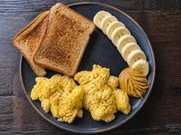
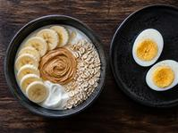
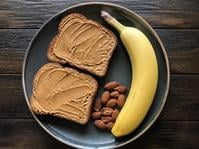
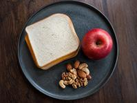
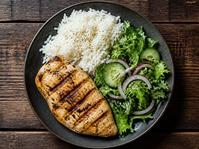

Hola, Lorenzo. Tu plan de nutrición (V1)
Primera revisión: 7 de noviembre de 2026.
Tu punto de partida
Para ganar músculo, te propongo arrancar con:
2.800 a 3.100Calorías por día
140 a 155 gProteína por día
Es un punto de partida, no una cifra exacta: lo ajustamos con tu peso y cómo te sentís. No hace falta contar nada al detalle: los platos de abajo ya están pensados para que llegues.
Tus comidas
Desayuno

Opción 12 huevos revueltos, 2 rebanadas de pan tostado, 1 banana, 1 cucharada de pasta de maní y 1 vaso de leche.
≈ 653 kcal · 32 g de proteína 
Opción 21 pote de yogur natural con 4 cucharadas de avena, 1 banana en rodajas, 1 cucharada de pasta de maní y 2 huevos duros.
≈ 621 kcal · 31 g de proteína Media mañana
En el colegio, sin heladera: todo esto aguanta fuera de la heladera.

Opción 12 rebanadas de pan tostado con 1 cucharada de pasta de maní, 1 banana y 1 puñado chico de frutos secos.
≈ 446 kcal · 14 g de proteína 
Opción 21 sándwich de pan de miga con 2 fetas finas de queso duro, 1 manzana y 1 puñado chico de frutos secos.
≈ 452 kcal · 17 g de proteína Almuerzo
Es la comida de tu familia. Si lo que hay es distinto, armá el plato con la misma idea.

Opción 11 pechuga chica de pollo (unos 120 g cocida), 1 taza y media de arroz cocido y 1 plato de ensalada con 1 cucharada de aceite de oliva.
≈ 650 kcal · 44 g de proteína Opción 21 porción de lomo de cerdo (unos 120 g cocido), 2 papas medianas hervidas (unos 300 g) y 1 plato de ensalada con 1 cucharada de aceite de oliva.
≈ 578 kcal · 38 g de proteína Merienda
Los días en que no vas directo al gimnasio.
Opción 11 pote de yogur natural con 4 cucharadas de avena, 1 banana y 1 cucharada de pasta de maní.
≈ 477 kcal · 19 g de proteína Opción 22 rebanadas de pan tostado con 2 huevos fritos o revueltos, 1 banana y 1 cucharada de pasta de maní.
≈ 503 kcal · 24 g de proteína Pre-entreno (martes y viernes)
Salís del colegio a las 16:00 y vas directo al gimnasio: comelo en el colegio, antes de salir, en lugar de la merienda. No necesita heladera.
Opción 13 rebanadas de pan con 2 cucharadas de pasta de maní y 1 banana.
≈ 533 kcal · 18 g de proteína Opción 21 sándwich de pan de miga con 2 fetas finas de queso duro, 1 banana y 1 puñado chico de frutos secos.
≈ 462 kcal · 18 g de proteína Cena
Es la comida de tu familia. Si lo que hay es distinto, armá el plato con la misma idea.
Opción 11 bife chico (unos 100 g cocido), 1 plato hondo de fideos (unos 210 g cocidos) y 1 plato de ensalada con 1 cucharada de aceite de oliva.
≈ 694 kcal · 39 g de proteína Opción 21 pechuga chica de pollo (unos 100 g cocida), 2 tazas de arroz cocido y 1 plato de ensalada con 1 cucharada de aceite de oliva.
≈ 720 kcal · 41 g de proteína Las cantidades son aproximadas y las fotos son solo de ejemplo.
Reglas
- Alterná: un día comé todas las comidas de la Opción 1 y al día siguiente todas las de la Opción 2. Si una comida se te complica, usá la otra opción, pero no la saltees.
- Martes y viernes comé el pre-entreno en lugar de la merienda.
- En el almuerzo y la cena, si tu familia cocina otra cosa, armá el plato con la misma idea: una porción de carne, pollo o pescado, arroz, papa o fideos, y ensalada.
- Cociná por tandas: un día de la semana dejá hechos el arroz, el pollo y la carne para varios días.
Qué registrar
Esta semana anotá:
- Tu peso en ayunas, 3 días por semana (lunes, miércoles y viernes).
- Cuánto cumpliste del plan de comidas.
- Cómo estuvo tu hambre.
Eso nos dice si el punto de partida está bien o hay que ajustarlo. Un día suelto no cambia nada: miramos la tendencia.
Próximo paso
Nos vemos en la revisión el 7 de noviembre de 2026. Si algo no te cierra antes, avisame.
Si algo no se ve o no se entiende, avisame por el chat.